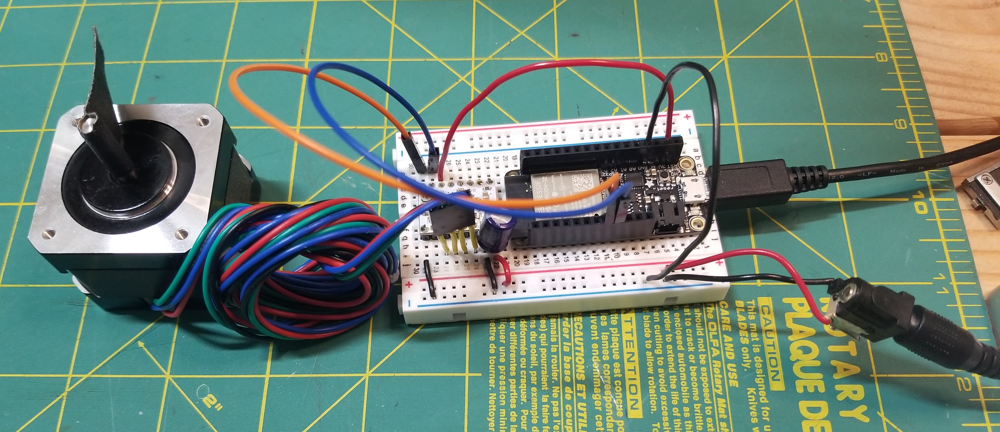
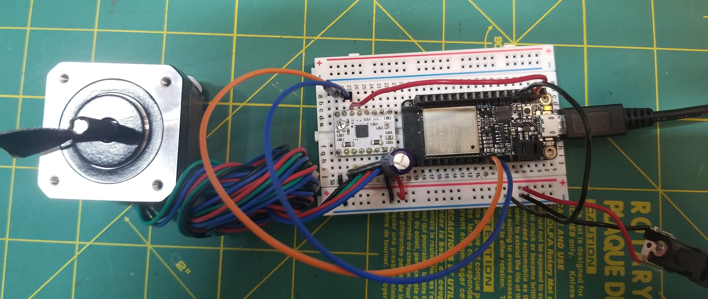

<h3> Stepper Motor Control with DRV8834</h3>
<p> We will be using the <a href='https://www.pololu.com/product/2134'>DRV8834 Low-Voltage Stepper Driver</a> (for 5V, portable projects). Make sure to review the product description and datasheet.
</p>
<p> Note: These products can get hot enough to burn you long before the chip overheats. Take care when handling this product and other components connected to it. </p>
<h3>Stepper Motor </h3>
<p> We have a number of different bipolar stepper motors in the lab.
Find motors around the lab and look up their data sheets, especially rated current/phase, voltage, and phase resistance (e.g. US-17HS441, 17HS19-2004S1, etc.). Let's use the following motor for this example:
<a href='https://www.omc-stepperonline.com/nema-17-bipolar-1-8deg-26ncm-36-8oz-in-0-4a-12v-42x42x34mm-4-wires.html?search=Nema%2017%20Bipolar%201.8deg%2026Ncm%20%2836.8oz.in%29%200.4A%2012V%2042x42x34mm%204%20Wires'>Nema 17 Bipolar 1.8deg 26Ncm (36.8oz.in) 0.4A 12V 42x42x34mm 4 Wires</a>. </p>
Note some of the Electrical Specifications:
- Rated Current/phase: 0.4A
- Voltage: 12V
- Phase Resistance: 30ohms
<h3>Current Limiting </h3>
<p> Our motors have a maximum current rating of 0.4A with a 30Ω coil resistance, which would indicate a maximum motor supply of 12V. Using such a motor with a higher voltage would allow higher step rates, but the current must actively be limited to under 0.4A. (Anyway, we won't be using more than 9V).
</p>
<h3> Wiring</h3>
<p> Wire the board as described on the product page. Include a 100uF capacitor between the VCC and GND in order to protect the driver from voltage spikes. In the photo, I've used a barrel jack connector to connect to a 9V wall outlet supply. Alternatively, you could run the motor at a lower voltage, like the 5V supply from the USB pin on the Huzzah.
</p>
<img src='https://a.pololu-files.com/picture/0J4344.600.png?519b6c6d74c2f655dd6637eccd4590c0' alt='wiring diagram'>
<br> <br>

<br> <br>

<h3> Programming </h3>
<p> At the most basic level, we can control the chopper driver simply by sending pulses to the STEP pin of the driver.
</p>
<pre><code class="language-arduino">
const int stepPin = 13;
const int dirPin = 12;
void setup() {
// put your setup code here, to run once:
pinMode(stepPin, OUTPUT);
pinMode(dirPin, OUTPUT);
digitalWrite(dirPin, LOW);
}
void loop() {
// put your main code here, to run repeatedly:
digitalWrite(stepPin, LOW);
delay(50);
digitalWrite(stepPin, HIGH);
delay(50);
}
</code></pre>
<p> Switching the DIR pin from LOW to HIGH will reverse the direction of the motor. </p>
<p> We can choose a library to help simplify control of stepper motors. The <a href='https://www.arduino.cc/en/reference/stepper'>Arduino Stepper Motor Library</a> supports differnt driver configurations. The <a href='https://www.airspayce.com/mikem/arduino/AccelStepper/index.html'>AccelStepper</a> library extends this functionality with acceleration/deceleration and non-blocking (no delay()) functions. </p>
<pre><code class="language-arduino">
#include &lt;AccelStepper.h&gt;
const int stepPin = 13; // blue
const int dirPin = 12; // orange
// Define a stepper and the pins it will use
AccelStepper stepper(1, stepPin, dirPin); // initialise accelstepper for a two wire board
void setup()
{
}
void loop()
{
if (stepper.distanceToGo() == 0)
{
// Random change to speed, position and acceleration
// Make sure we dont get 0 speed or accelerations
delay(1000);
stepper.moveTo(rand() % 1000);
stepper.setMaxSpeed((rand() % 1000) + 1);
stepper.setAcceleration((rand() % 1000) + 1);
}
stepper.run();
}
</code></pre>